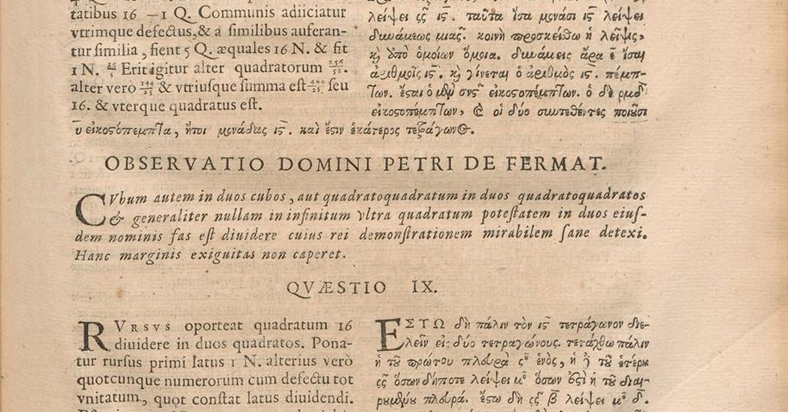
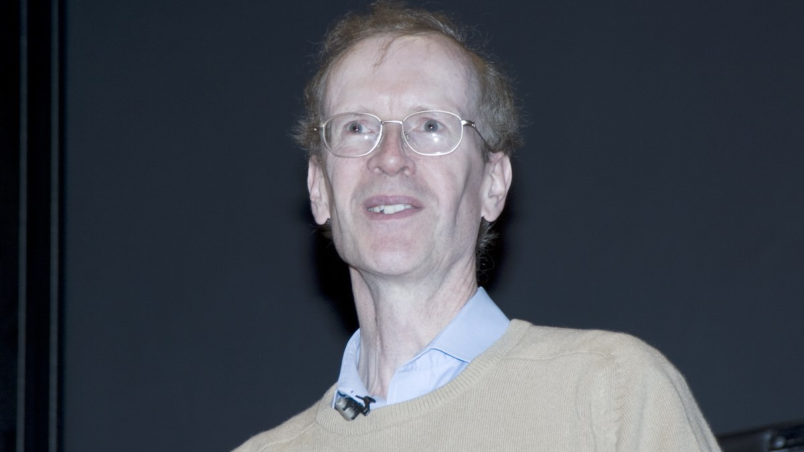

In about 1637, in the margin of a book, Pierre de Fermat wrote that he had found a truly marvelous proof that no cube is the sum of two cubes, nor any higher power the sum of two like powers, and that the margin was too narrow to contain it. Then he died, and for three hundred and fifty years nobody could say whether the sentence in the margin was knowledge or just a sentence. It read like a fact. It had the grammar of a fact. Generations of the best mathematicians alive could not tell if it was one.

Diophantus, Arithmetica (1670 edition), the page carrying Fermat marginal note. Public domain, via Wikimedia Commons.
“Cuius rei demonstrationem mirabilem sane detexi. Hanc marginis exiguitas non caperet.”
“I have discovered a truly marvelous proof of this, which this margin is too narrow to contain.”
Pierre de Fermat, in the margin of his Diophantus, as printed in the 1670 edition
I have come to think that is the most important distinction there is, and the one we are least equipped to make right now: the difference between something that is true and something that is merely well formed. A sentence can obey every rule of its language, name real objects, sound exactly like the truth, and still carry no proof behind it. Fermat's note was the purest example in history, a claim indistinguishable in form from knowledge, sitting in the margin for three and a half centuries with nothing underneath it.
This is not an old problem anymore. It is the problem. A language model produces sentences the way Fermat produced that note, fluently, plausibly, in the exact register of someone who knows. When such a model tells you a fact, you are back in the margin: the words are well formed and you cannot tell from the words alone whether anything stands behind them. We have built the greatest engine of well-formed sentences ever made, and turned it loose in the one century that most needs to tell form from truth.
I met the same gap from the other side, in physics, long before the models. I spent years simulating how heat moves through crystals, and for a stretch of months two independent codes gave two different answers for the thermal conductivity of the same material. We treated it as physics. We looked for the effect that would explain the discrepancy, the subtle mechanism one code captured and the other missed. We wrote it up as a puzzle. It was not physics. The two codes meant different things by the words "thermal conductivity," one had computed a part and the other the whole, and once we spelled the quantity out completely, all the way down, the disagreement did not resolve so much as evaporate. There had never been a discrepancy. There had been two well-formed sentences we mistook for one.
Months. The cost of not being able to tell a claim from its ground is not embarrassment, it is time, sometimes centuries of it, spent chasing a phantom the grammar invented. What both stories have in common is that no amount of staring at the sentence could settle it. Fermat's note could not be read harder into truth or falsehood. Our two numbers could not be compared into agreement. The form was exhausted; the ground had to be produced separately.
Producing the ground is what a proof is. In 1994 Andrew Wiles finally supplied Fermat's, and it did not fit in a margin, it ran to more than a hundred pages and leaned on machinery Fermat could not have dreamed of. It closed the question not by being eloquent but by being checkable: other people could follow it, step by step, and confirm that each step held. A proof is the opposite of a well-formed sentence. A sentence asks to be believed; a proof offers to be checked.
Fermat's tools were a century of elementary number theory. Wiles needed elliptic curves and modular forms, machinery nobody had for another three hundred years. The mainstream guess among historians, and it can only be a guess, is that Fermat had talked himself into an argument that looked sound and was not, probably one that leaned on factoring in a setting where factoring does not behave the way it does for ordinary whole numbers. That is precisely the trap that caught Gabriel Lamé in 1847, when he announced a general proof to the French Academy built on exactly that assumption, three years after Kummer had already shown the assumption false. Nobody had told Lamé, or he had not listened. Fermat's note was not a lie. It was a mistake wearing the grammar of a fact, and a mistake in that disguise cannot be caught by rereading it.

Andrew Wiles. Photograph copyright C. J. Mozzochi, Princeton N.J., used by permission (attribution-only license), via Wikimedia Commons.
Even when a proof existed, someone still had to judge it, and judges have interests. Newton and Leibniz spent decades arguing over who had invented the calculus, and when the Royal Society convened a committee to settle it, the committee found for Newton. The Royal Society's president at the time was Newton. He picked the committee, and the report that carried its name was largely his own drafting; two years later he wrote an anonymous review of that same report, praising its rigor. The verdict may even have been right. That is not the point. For most of history, checking a claim has meant asking a person, and a person can hold the pen and have a stake in the answer at once.
There is now a way to make that offer absolute. In Lean, a proof assistant, a statement is a shape and a proof is an object that must fit that shape exactly; a small trusted kernel checks the fit and there is no such thing as a plausible proof, only one that compiles or one that does not exist. A theorem written in Lean is a sentence that cannot lie, not because anyone is vigilant but because the language makes the lie inexpressible. Mathlib, its community library, now holds on the order of two hundred thousand machine-checked theorems, built over a decade by people who were not thinking about language models at all. They were producing ground for its own sake, and it turned out to be the one thing the models cannot produce for themselves.
The truss carries its own constraints: the Golden Gate Bridge understructure. Jet Lowe, Historic American Engineering Record (HAER CA-31-14), U.S. National Park Service. Public domain, via the Library of Congress.
Physics is starting to build the same floor. Physlib, which grew out of Joseph Tooby-Smith's HepLean, formalizes physical results so the compiler is the referee: the entropy of an ideal gas, tight-binding chains, relativity, quantum information, each one a claim with its ground attached. I sent the project a small contribution last week, the thermoelectric figure of merit, and the compiler was the strictest referee I have written for. It also has a boundary worth stating plainly, the one my two codes should have taught me sooner: a proof that compiles buys consistency, not reality. It guarantees the sentence has ground of the kind it claims, not that the claim matches the world. The bridge still needs its load test. A formalized law is only as true as the model inside it. Formal verification does not end the work of science; it ends the confusion between a result and a sentence that sounds like one, which is a different thing and, right now, the more urgent one.
The money is starting to see it. In July 2025, Alex Gerko, the founder of XTX Markets, gave ten million dollars through Renaissance Philanthropy, half to the Lean FRO and half to Mathlib, toward natural-language interfaces to Lean and datasets for machine-assisted proof. Gerko trades for a living, which is to say he prices the gap between what is claimed and what is true; read the gift as a position on where that gap gets closed.
Fermat's note was wrong to write and right to make. It was a promise of ground he could not deliver, and it cost three centuries, but it named the thing exactly: a marvelous claim, and no room in the margin. We are about to be handed margins without end, filled at machine speed with sentences in the perfect register of the truth. The question the note asked is now the only question that matters. Not whether a claim is well formed. Whether anyone can check it.